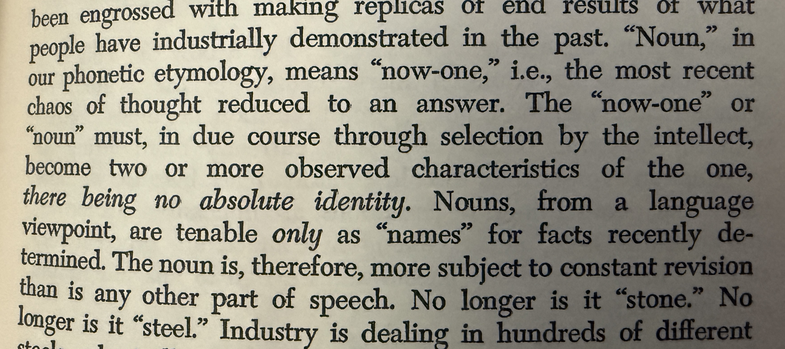

Nine Chains · Vignette 17
The Cold Universe of
the Replaceable Noun
A reading conversation between Buckminster Fuller, Alfredo Mathew, and AI—on provisional names, absolute identity, and the moral necessity of the particular person.

Alfredo
Interpretation
To Fuller, nouns and proper names are subjective. They are temporary answers imposed upon chaos—“now one,” then another. A noun identifies whatever characteristics the intellect has most recently selected, but further observation divides the apparent one into many.
There is no absolute identity.
Scientifically, I understand the proposition. What we call stone is not simply stone. What we call steel becomes many different steels. Every stable object contains differences that appear when we look more closely.
But when the same logic is applied to human beings, it is bone-chilling. If identity is never absolute, what makes this person irreplaceable? If humanity is one aggregated person, do individual persons become interchangeable mechanisms within it? Does my name refer only to a temporary arrangement that the universe can exchange for another?
This is a cold, cold universe Buckminster Fuller is describing.
AI
Synthesis
Fuller distrusts the noun because it arrests a dynamic universe. Naming makes motion appear static and multiplicity appear singular. His “noun” as “now-one” is phonetic philosophy rather than accepted etymology—the word comes through French and Latin from nomen, meaning name—but the wordplay expresses his belief that every category must remain revisable.
Two readings divide here. No noun can contain the person is liberation. There is no irreducible person to contain is erasure.
Fuller’s universalism repeatedly dissolves boundaries: self into species, person into mechanism, object into energy, and noun into provisional observation. That dissolution can free us from ego and false possession. It can also remove the moral boundary protecting the singular person from sacrifice to the whole.
A proper name does more than classify a bundle of characteristics. It addresses someone. It preserves accountability to a history. We can belong to the whole without becoming replaceable parts.
A name may not be an absolute definition.
But it can still be a promise to remember who must not be erased.